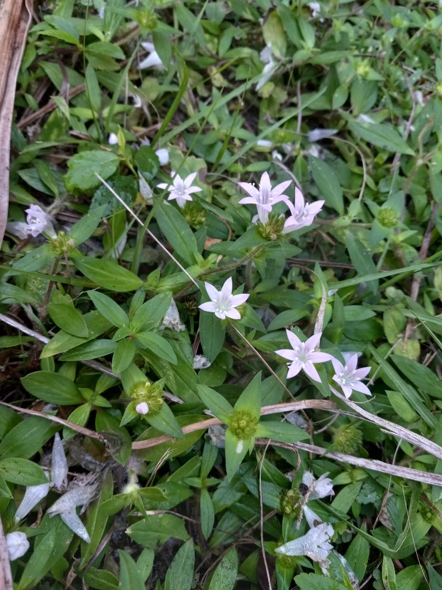

- A low-growing groundcover with cheerful white to pale-pink, star-shaped flowers, often dismissed as a lawn weed. It belongs to the coffee family (Rubiaceae) and is widely called Florida snow for the way its blooms can cover a lawn, and Mexican clover.
- Though non-native - it came from Brazil and naturalized across Florida in the 20th century - it is a genuinely good nectar plant for bees and butterflies, which is why some pollinator gardeners tolerate or even welcome it.
Non-native. Native to South America, primarily Brazil. Naturalized across Florida in the 20th century. Member of Rubiaceae — the coffee family, same as Firebush, Wild Coffee, and Pentas in the collection.
- Largeflower Pusley is one of the plants behind the nickname Florida snow - in fall and winter its small white-to-pink flowers can blanket a thin lawn. It is a creeping perennial in the coffee family (Rubiaceae), the same family as the park's Wild Coffee and as commercial coffee and gardenias, and it is native to Brazil, naturalized across central and southern Florida over the last century.
- Turf managers treat it as a persistent weed, but it sits in the love-hate category: its flowers are a reliable nectar source for bees and butterflies, and some pollinator gardeners leave it in place for that reason. It thrives where turf is thin, soils are sandy, or lawns are stressed, spreading by seed and by stems that root at the nodes.
- It is recorded here as part of documenting everything growing on the grounds - a common, pretty, non-native groundcover most people have seen but never named.
A useful nectar source for bees and butterflies over a long blooming season - its main redeeming wildlife value. It offers little else, and as a non-native it does not host native insects the way a native groundcover would.
Small, star-shaped, white to pink or lavender, about a third of an inch across, clustered at the branch tips. Long blooming, heaviest fall through winter.
Opposite, hairy, narrowly elliptical, tapering at both ends.
Low, creeping perennial with hairy branching stems that root at the nodes, forming mats.
Mats of small star-shaped white-to-pink flowers in thin turf and sandy disturbed ground, busiest with small pollinators in the cooler months.
This isn't a food plant, but it's harmless — not toxic to people or dogs.


- © teschaim (CC-BY-NC), via iNaturalist